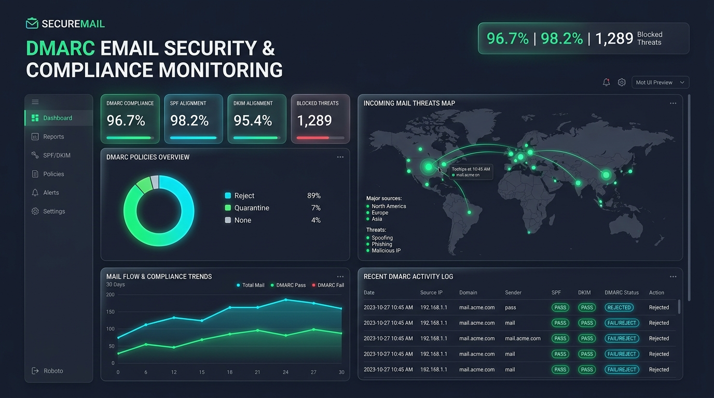

A scalable, microservice-based monitoring platform to ingest, parse, and analyze DMARC (RUA/RUF) reports. Gain total transparency over SPF/DKIM alignment and unauthorized senders.

Centralized engineering documentation, architecture diagrams, and guides.
Comprehensive system architecture, structural building blocks, runtime sequence diagrams, and crosscutting security concepts adhering to the arc42 framework.
Open arc42 DocumentationInteractive Swagger and OpenAPI endpoint definitions for metrics querying, domain policy configuration, and user authentication.
View API MatrixStep-by-step guides for DNS record verification, SMTP port forwarding, Redis backup management, and production clustering.
View Deployment ViewHigh throughput email compliance auditing designed for modern security workflows.
Dedicated SMTP ingester container accepting incoming aggregate reports (.xml, .gz, .zip) with zero external dependencies.
Decoupled background parser processing queued XML records via Redis, ensuring high ingestion resilience under report spikes.
Clean Vite + React dashboard featuring SPF/DKIM alignment rate tracking, IP geolocation trends, and threat alerts.
Role-based access control (RBAC), multi-factor TOTP authentication, and optional Single Sign-On (SSO) support.
Monitor unlimited sender domains and subdomains from a single pane of glass with actionable alignment warnings.
One-command launch orchestrating PostgreSQL, Redis, API, Ingester, Parser, and Web Frontend in isolated networks.
From inbound MTA report ingestion to consolidated security intelligence.
Receives via Port 25 (Reverse Proxy/NAT) → Port 2525, unpackages XML, pushes to Redis.
Parses DMARC XML schema, validates records, and populates PostgreSQL.
Calculates alignment scores, threat rates, and manages user policies.
Real-time visual monitoring, geo-mapping, and audit log exploration.